Introduction to Spatial Vector Data Using the sf Package
Josh Carrell - Utah State University, MS Ecology
Last Update: May 13, 2022
Spatial Vector Data
As you remember from the Week 4 lecture guide, spatial vector data are discrete datasets in the form of points, lines, and polygons.

Points are locations in space defined by a set of coordinates (x,y). Lines are derived from the connection of at least 2 points (called nodes). Polygons are created through the connection of lines that encapsulate an area.
Shapefiles
The common vector data type is the shapefile (.shp). Shapefiles contains a few other data like a projection file that contains our coordinate system (.prj), tabular information describing the characteristics of the spatial data (.dbf) and a few others.
Shapefiles are not the only vector data type you can work with but as for this class, We will be working with shapefiles.
sf
Straight from the horses mouth,
“Simple features or simple feature access refers to a formal standard (ISO 19125-1:2004) that describes how objects in the real world can be represented in computers, with emphasis on the spatial geometry of these objects. It also describes how such objects can be stored in and retrieved from databases, and which geometrical operations should be defined for them”. - sf package documentation
Basically, sf is a package that allows us to upload, organize, manipulate, analyze, and visualize spatial data.
- Most sf functions start with “st_”.
In this coding guide, we will use a case study and introduce 20 (that’s right, 20!) sf functions. There are more sf funtions out there, but these 20 will get you on the right track for working with spatial vector data.
Data
Our data for this guide will focus on the 4 corners area of the United States. We will be using the following:
Points: Occurrences (either viewed locations or collected specimen) of Mule Deer.
Lines: Major Highways of the United States
Polygons: States of the United States & Counties of 4 corners states
Objectives:
The purpose of this coding guide is to show you practical examples of using sf and it’s many functions. We’re covering around 20 functions here. It’s more than enough to get started and to start thinking about how you want to work with spatial vector data.
libraries
Install (if you haven’t already - you should have by now!) and load the following packages:
sf
tidyverse
library(sf)
library(tidyverse)sf functions
st_read()
st_read() is the function for loading shapefiles into R. Lets load in the following shapefiles found in the Week 4 data folder on Canvas:
United States Counties (tl_2021_us_county.shp)
United States States (states.shp)
United States Major Highways (tl_2017_us_primaryroads.shp)
NOTE: You’ll notice a few characteristics of the data pop up when loading in a shapefile (same thing for a raster):
Shapefile Name
Simple feature with x features and x fields (# of rows by # of columns)
Geometry type (Point, line, or polygon)
Dimension (spatial, it requires x,y coordinates)
Bounding box (the larger extent around the data)
Geodetic CRS (Which coordinate system is currently assigned to the data)
# US counties
counties <- st_read("D:/R Textbook Template/NR6950 Notebook/NR 6950 Notebook/Data/sf_datasets/tl_2021_us_county.shp")## Reading layer `tl_2021_us_county' from data source
## `D:\R Textbook Template\NR6950 Notebook\NR 6950 Notebook\Data\sf_datasets\tl_2021_us_county.shp'
## using driver `ESRI Shapefile'
## Simple feature collection with 3234 features and 17 fields
## Geometry type: MULTIPOLYGON
## Dimension: XY
## Bounding box: xmin: -179.2311 ymin: -14.60181 xmax: 179.8597 ymax: 71.43979
## Geodetic CRS: NAD83# US States
states <- st_read("D:/R Textbook Template/NR6950 Notebook/NR 6950 Notebook/Data/sf_datasets/state.shp")## Reading layer `state' from data source
## `D:\R Textbook Template\NR6950 Notebook\NR 6950 Notebook\Data\sf_datasets\state.shp'
## using driver `ESRI Shapefile'
## Simple feature collection with 56 features and 4 fields
## Geometry type: MULTIPOLYGON
## Dimension: XY
## Bounding box: xmin: -179.1686 ymin: -14.59976 xmax: 179.7487 ymax: 71.38961
## Geodetic CRS: WGS 84# Roads
roads <- st_read("D:/R Textbook Template/NR6950 Notebook/NR 6950 Notebook/Data/sf_datasets/tl_2017_us_primaryroads.shp")## Reading layer `tl_2017_us_primaryroads' from data source
## `D:\R Textbook Template\NR6950 Notebook\NR 6950 Notebook\Data\sf_datasets\tl_2017_us_primaryroads.shp'
## using driver `ESRI Shapefile'
## Simple feature collection with 11574 features and 4 fields
## Geometry type: LINESTRING
## Dimension: XY
## Bounding box: xmin: -158.1042 ymin: 17.98217 xmax: -65.64866 ymax: 49.00209
## Geodetic CRS: NAD83Examine
Below are a few common functions that I use to examine my data. They are not from the sf packge but they are very useful.
Check out the code and the outputs below!
str(counties) # data structure## Classes 'sf' and 'data.frame': 3234 obs. of 18 variables:
## $ STATEFP : chr "31" "53" "35" "31" ...
## $ COUNTYFP: chr "039" "069" "011" "109" ...
## $ COUNTYNS: chr "00835841" "01513275" "00933054" "00835876" ...
## $ GEOID : chr "31039" "53069" "35011" "31109" ...
## $ NAME : chr "Cuming" "Wahkiakum" "De Baca" "Lancaster" ...
## $ NAMELSAD: chr "Cuming County" "Wahkiakum County" "De Baca County" "Lancaster County" ...
## $ LSAD : chr "06" "06" "06" "06" ...
## $ CLASSFP : chr "H1" "H1" "H1" "H1" ...
## $ MTFCC : chr "G4020" "G4020" "G4020" "G4020" ...
## $ CSAFP : chr NA NA NA "339" ...
## $ CBSAFP : chr NA NA NA "30700" ...
## $ METDIVFP: chr NA NA NA NA ...
## $ FUNCSTAT: chr "A" "A" "A" "A" ...
## $ ALAND : num 1.48e+09 6.81e+08 6.02e+09 2.17e+09 1.49e+09 ...
## $ AWATER : num 10690204 61568965 29090018 22847034 1718484 ...
## $ INTPTLAT: chr "+41.9158651" "+46.2946377" "+34.3592729" "+40.7835474" ...
## $ INTPTLON: chr "-096.7885168" "-123.4244583" "-104.3686961" "-096.6886584" ...
## $ geometry:sfc_MULTIPOLYGON of length 3234; first list element: List of 1
## ..$ :List of 1
## .. ..$ : num [1:1351, 1:2] -96.6 -96.6 -96.6 -96.6 -96.6 ...
## ..- attr(*, "class")= chr [1:3] "XY" "MULTIPOLYGON" "sfg"
## - attr(*, "sf_column")= chr "geometry"
## - attr(*, "agr")= Factor w/ 3 levels "constant","aggregate",..: NA NA NA NA NA NA NA NA NA NA ...
## ..- attr(*, "names")= chr [1:17] "STATEFP" "COUNTYFP" "COUNTYNS" "GEOID" ...dim(counties) # data dimensions## [1] 3234 18head(counties, 2) # quick view## Simple feature collection with 2 features and 17 fields
## Geometry type: MULTIPOLYGON
## Dimension: XY
## Bounding box: xmin: -123.7283 ymin: 41.74202 xmax: -96.55486 ymax: 46.38562
## Geodetic CRS: NAD83
## STATEFP COUNTYFP COUNTYNS GEOID NAME NAMELSAD LSAD CLASSFP MTFCC
## 1 31 039 00835841 31039 Cuming Cuming County 06 H1 G4020
## 2 53 069 01513275 53069 Wahkiakum Wahkiakum County 06 H1 G4020
## CSAFP CBSAFP METDIVFP FUNCSTAT ALAND AWATER INTPTLAT INTPTLON
## 1 <NA> <NA> <NA> A 1477645345 10690204 +41.9158651 -096.7885168
## 2 <NA> <NA> <NA> A 680976231 61568965 +46.2946377 -123.4244583
## geometry
## 1 MULTIPOLYGON (((-96.55515 4...
## 2 MULTIPOLYGON (((-123.4908 4...names(counties) # column names## [1] "STATEFP" "COUNTYFP" "COUNTYNS" "GEOID" "NAME" "NAMELSAD"
## [7] "LSAD" "CLASSFP" "MTFCC" "CSAFP" "CBSAFP" "METDIVFP"
## [13] "FUNCSTAT" "ALAND" "AWATER" "INTPTLAT" "INTPTLON" "geometry"class(counties) # What is it?## [1] "sf" "data.frame"st_crs()
As we learned in the lecture guide, the geographic coordinate systems assigned to the data makes a big difference in how we visualize our data. There is another important aspect of geographic coordinate systems:
For spatial data to be mapped properly in R, all data must be in the same CRS.
R doesn’t automatically reproject your data for you (ESRI ArcGIS Products do). We need to check the CRS of each data and transform them to match our desired coordinate system.
You can check the coordinate system by using the function, st_crs(). Warning, the full CRS name will print… it gets overwhelming to look at. Helpful things to point out are the Datum name (near the top) and the EPSG code (near the bottom).
Check out the code and outputs below:
st_crs(counties)## Coordinate Reference System:
## User input: NAD83
## wkt:
## GEOGCRS["NAD83",
## DATUM["North American Datum 1983",
## ELLIPSOID["GRS 1980",6378137,298.257222101,
## LENGTHUNIT["metre",1]]],
## PRIMEM["Greenwich",0,
## ANGLEUNIT["degree",0.0174532925199433]],
## CS[ellipsoidal,2],
## AXIS["latitude",north,
## ORDER[1],
## ANGLEUNIT["degree",0.0174532925199433]],
## AXIS["longitude",east,
## ORDER[2],
## ANGLEUNIT["degree",0.0174532925199433]],
## ID["EPSG",4269]]st_crs(states)## Coordinate Reference System:
## User input: WGS 84
## wkt:
## GEOGCRS["WGS 84",
## DATUM["World Geodetic System 1984",
## ELLIPSOID["WGS 84",6378137,298.257223563,
## LENGTHUNIT["metre",1]]],
## PRIMEM["Greenwich",0,
## ANGLEUNIT["degree",0.0174532925199433]],
## CS[ellipsoidal,2],
## AXIS["latitude",north,
## ORDER[1],
## ANGLEUNIT["degree",0.0174532925199433]],
## AXIS["longitude",east,
## ORDER[2],
## ANGLEUNIT["degree",0.0174532925199433]],
## ID["EPSG",4326]]st_crs(roads)## Coordinate Reference System:
## User input: NAD83
## wkt:
## GEOGCRS["NAD83",
## DATUM["North American Datum 1983",
## ELLIPSOID["GRS 1980",6378137,298.257222101,
## LENGTHUNIT["metre",1]]],
## PRIMEM["Greenwich",0,
## ANGLEUNIT["degree",0.0174532925199433]],
## CS[ellipsoidal,2],
## AXIS["latitude",north,
## ORDER[1],
## ANGLEUNIT["degree",0.0174532925199433]],
## AXIS["longitude",east,
## ORDER[2],
## ANGLEUNIT["degree",0.0174532925199433]],
## ID["EPSG",4269]]CRS == CRS?
You can even run the function and check to see if the CRS of 2 different data are the same:
st_crs(counties) == st_crs(states) # You must use 2 equal signs, ==## [1] FALSE# reponse will be T or Fst_transform()
At this point, we have taken a look the basic details of the data including the assigned CRS. But what if we want to change the coordinate system?
st_transform() allows for the data to be “transformed” (projected is also a good term) from one CRS to another. The basic syntax is as follows:
x <- st_tranform(x, EPSG Code of new CRS)
Make sure you assign the function and code to the current shapefile you want to transform. Otherwise, it won’t apply to your data.
For this assignment, we are going to transform our data to: NAD83 / Conus Albers (EPSG 5070).
Lets change those CRS’ of the data. Check the code below:
counties <- st_transform(counties, 5070)
states <- st_transform(states, 5070)
roads <- st_transform(roads, 5070)st_geometry()
If the changing of our data worked, we should be able to plot our data.. Let’s plot states.
plot(states)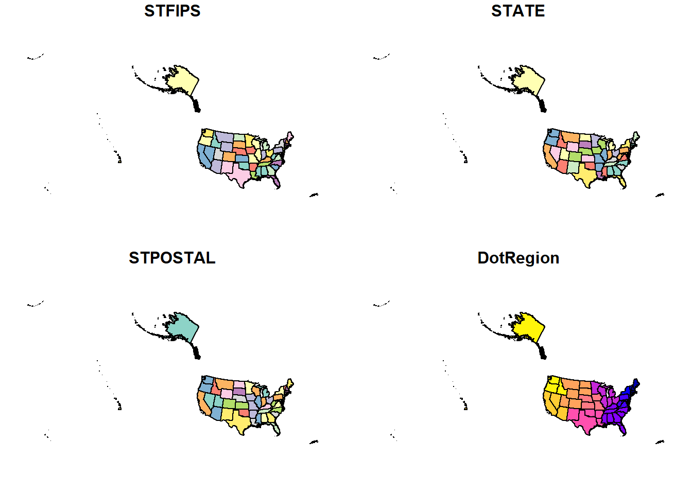
So what happened?
Well, if you only use the plot() function, that particular shapefile will plot not only the shapefile geometry but also the geometry for every column in the dataset (except for the geometry column - which contains the spatial data - the other columns are our tabular descriptive data).
Above are 4 maps. How many columns were there? Check code below:
ncol(states)-1 # checking the number of columns, subtracting 1 as the geometry column doesn't plot## [1] 4st_geometry() makes our life easier. The function goes inside the plot() function and the dataset we want to plot goes inside. Like this:
plot(st_geometry(states))
Let’s check it out:
plot(st_geometry(states))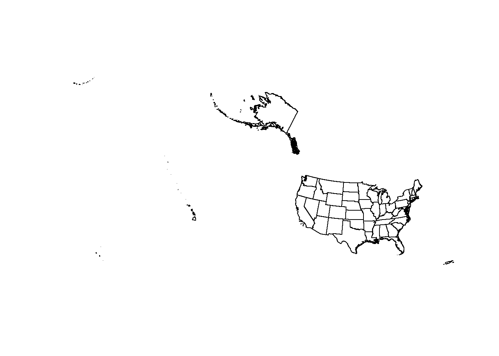
The $ sign
You can also use the $ to direct your shapefile to plot only the geometry column. Like this:
plot(states$geometry)
Both ways work.. It’s up to you.
Add = T
We can plot several shapefiles together in the same plot/map (IF they are in the same CRS, remember?). We simply add:
add = T
in our plot() function.
Let’s plot States and Roads together. Check the code below:
plot(states$geometry)
plot(st_geometry(roads$geometry), add = T)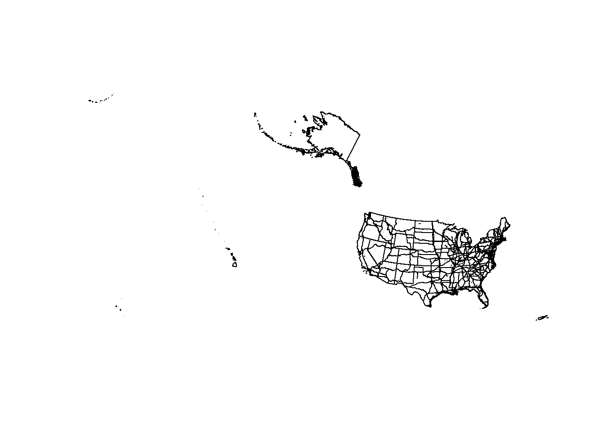
Subsetting Spatial Data Frames
The functions from the tidyverse can be directly applied to our spatial data for manipulation. If you remember from our objectives above, we are interested in mapping deer occurrences in the 4 corners states: AZ, UT, CO, NM. The “STATE” column in the states.shp contains the names of each state. We will use that as our subsetting column. Let’s call it states_4.
Check the code for subsetting our spatial data:
# Subset dataset to include only Four-corners states.
corners4 <- c("Arizona", "Colorado", "New Mexico", "Utah") # state names
states_4 <- states %>% # subsetting data from states
subset(STATE %in% corners4) # %in% searches lists; looking for names in States
plot(states_4$geometry) # plot. Should be 4 corners states!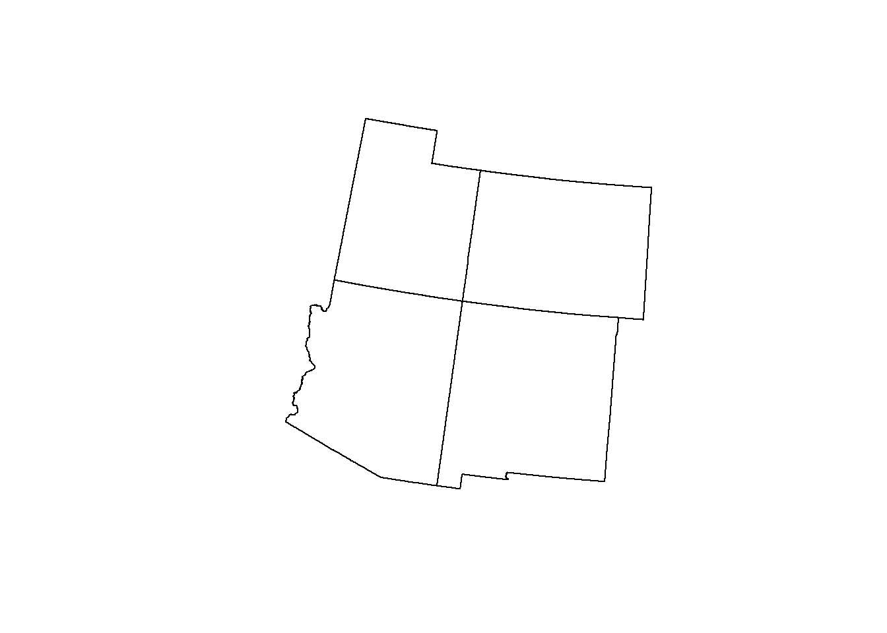
st_crop() vs. st_intersection()
Subsetting our States shapefile to the 4 corners states was easy.. Mostly because the state name data was already supplied to us. What about roads and counties? Can we just subset them to the four corners states?
Sadly, we can’t. Those data do not have a state column. However, there are some sf functions that allow us to clip the spatial dimensions of our data to match that of the 4 corners.
st_crop()
st_crop() will crop an sf object to a specific rectangle.
Let’s see what our roads data looks like when it is cropped to 4 corners. Check out the code below for the st_crop() syntax:
roads <- st_crop(roads, states_4)## Warning: attribute variables are assumed to be spatially constant throughout all
## geometriesplot(states_4$geometry)
plot(roads$geometry, add = T)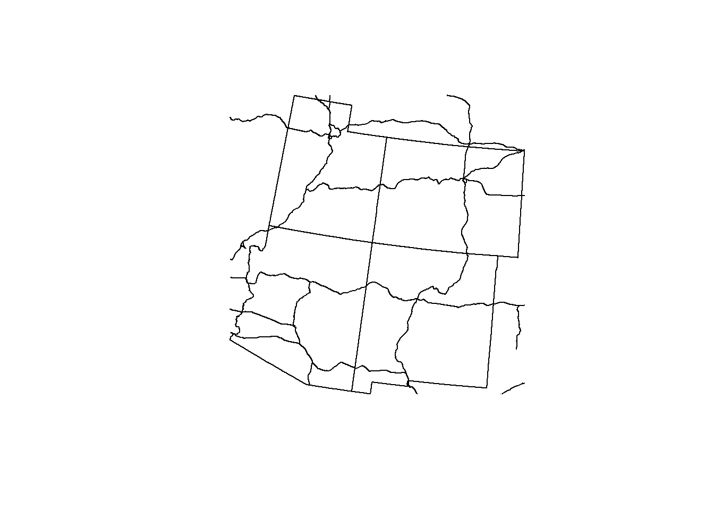
So how does it look? Did it crop the way we thought it would?
st_crop() actually doesn’t clip the data to the detailed geometry of the shapefile.. It clips the data to the bounding box extent of the data (imagine a box around our states that touches the N,S,E,W coordinates of the states).
st_intersection()
st_intersection() is very similar to st_crop(), only it clips the data (the roads) to the detailed geometry of the shapefile of interest (the states).
Let’s check it out below:
roads_4 <- st_intersection(roads, states_4)## Warning: attribute variables are assumed to be spatially constant throughout all
## geometriesplot(states_4$geometry)
plot(roads_4$geometry, add = T)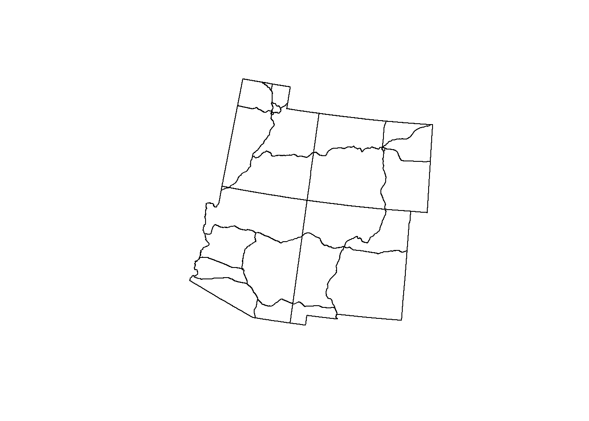
This is much more useful (and nicer looking too!). We will be using st_intersection() for not only the roads but also the county data.
counties_4 <- st_intersection(counties, states_4)## Warning: attribute variables are assumed to be spatially constant throughout all
## geometriesplot(states_4$geometry)
plot(counties_4$geometry, add = T)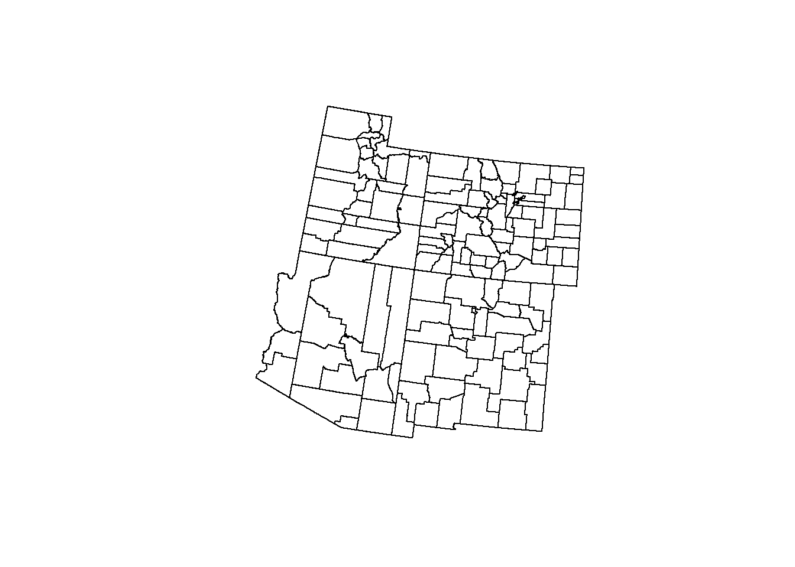
Plotting Them All Together!
Let’s make a quick plot using the shapefile geometries and add = T. Let’s give our data some color and a title.
Check the code for the plot below:
plot(states_4$geometry, col = "Black", main = "Roads and Counties of the 4 Corners States")
plot(counties_4$geometry, col = "Tan", add = T)
plot(roads_4$geometry, col = "Red", add = T)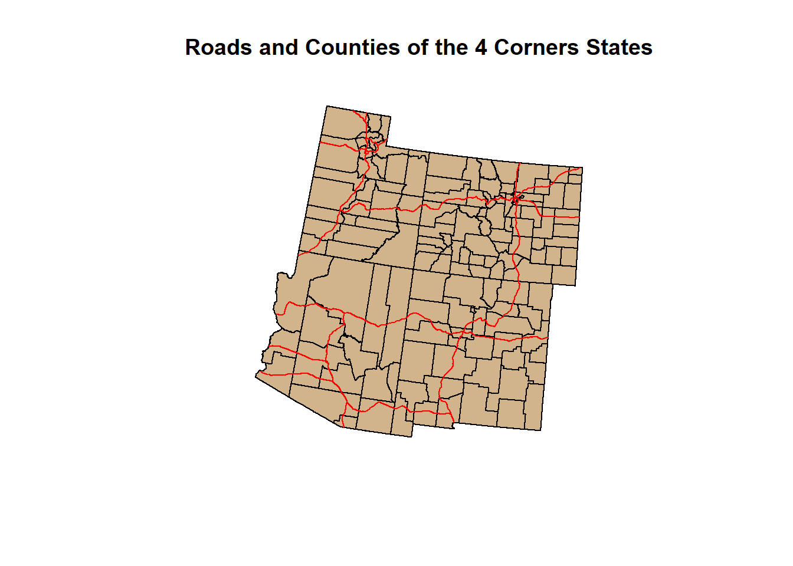
st_as_sf()
Lets get to our deer occurrences. We have a dataset of marked locations of either harvested or observed mule deer occurrence. However, the dataset is in .csv format…
So how do we get it to become a shapefile? Let’s first load our .csv and take a look at the data:
### Load the deer csv using read.csv()| NOT in the sf package ###
deer <- read.csv("D:/R Textbook Template/NR6950 Notebook/NR 6950 Notebook/Data/sf_datasets/mule_deer.csv")
# Examine
names(deer)## [1] "bisonID" "basisOfRecord"
## [3] "catalogNumber" "collectorNumber"
## [5] "recordedBy" "providerID"
## [7] "institutionCode" "resourceID"
## [9] "ownerInstitutionCollectionCode" "eventDate"
## [11] "year" "verbatimEventDate"
## [13] "providedScientificName" "scientificName"
## [15] "ITISscientificName" "providedCommonName"
## [17] "ITIScommonName" "ITIStsn"
## [19] "validAcceptedITIStsn" "providedTSN"
## [21] "decimalLatitude" "decimalLongitude"
## [23] "geodeticDatum" "coordinatePrecision"
## [25] "coordinateUncertaintyInMeters" "verbatimElevation"
## [27] "verbatimDepth" "centroid"
## [29] "higherGeographyID" "computedCountyFips"
## [31] "providedCounty" "calculatedCounty"
## [33] "providedState" "calculatedState"
## [35] "mrgid" "calculated_waterbody"
## [37] "establishmentMeans" "countryCode"
## [39] "institutionID" "collectionID"
## [41] "relatedResourceID" "associatedMedia"
## [43] "associatedReferences" "generalComments"
## [45] "license"head(deer, 2)## bisonID basisOfRecord catalogNumber collectorNumber recordedBy
## 1 2603288427 observation 42060189 mheiner3
## 2 1802756231 observation 9325949 JB
## providerID institutionCode
## 1 28eb1a3f-1c15-4a95-931a-4af90ecb574d iNaturalist.org
## 2 28eb1a3f-1c15-4a95-931a-4af90ecb574d iNaturalist.org
## resourceID ownerInstitutionCollectionCode
## 1 50c9509d-22c7-4a22-a47d-8c48425ef4a7 iNaturalist Research-grade Observations
## 2 50c9509d-22c7-4a22-a47d-8c48425ef4a7 iNaturalist Research-grade Observations
## eventDate year verbatimEventDate providedScientificName
## 1 2016-12-30 2016 2016-12-30 Odocoileus hemionus (Rafinesque, 1817)
## 2 2007-02-17 2007 2007/02/17 4:57 PM HST Odocoileus hemionus (Rafinesque, 1817)
## scientificName ITISscientificName providedCommonName ITIScommonName
## 1 Odocoileus hemionus Odocoileus hemionus Mule Deer
## 2 Odocoileus hemionus Odocoileus hemionus Mule Deer
## ITIStsn validAcceptedITIStsn providedTSN decimalLatitude decimalLongitude
## 1 180698 180698 42220 40.76078 -111.891
## 2 180698 180698 42220 37.24188 -112.961
## geodeticDatum coordinatePrecision coordinateUncertaintyInMeters
## 1 NA 18968
## 2 NA 5346
## verbatimElevation verbatimDepth centroid higherGeographyID computedCountyFips
## 1 NA NA 49035
## 2 NA NA 49053
## providedCounty calculatedCounty providedState calculatedState mrgid
## 1 Salt Lake County Utah Utah NA
## 2 Washington County Utah Utah NA
## calculated_waterbody establishmentMeans countryCode
## 1 NA HI US
## 2 NA HI US
## institutionID
## 1 http://www.inaturalist.org
## 2 http://www.inaturalist.org
## collectionID
## 1 https://www.inaturalist.org/observations?created_d2=2019-03-28T18%3A00%3A45-07%3A00&license%5B%5D=CC0&license%5B%5D=CC-BY&license%5B%5D=CC-BY-NC&quality_grade=research
## 2 https://www.inaturalist.org/observations?created_d2=2019-03-28T18%3A00%3A45-07%3A00&license%5B%5D=CC0&license%5B%5D=CC-BY&license%5B%5D=CC-BY-NC&quality_grade=research
## relatedResourceID associatedMedia associatedReferences generalComments
## 1 NA
## 2 NA
## license
## 1 CC_BY_NC_4_0
## 2 CC_BY_NC_4_0So that is a lot of information from one dataset.. We don’t need to know all of that or carry it around with us. We really only need to columns to make this tabular data into a spatial dataset: x and y.
In this case, x and y are represented as Latitude and Longitude. Let’s subset our data by selecting the latitude and longitude columns (let’s also through in basisOfRecord, or, “how the deer occurrence was collected).
# Subset to basisOfRecord, decimalLatitude, decimalLongitude
deer <- deer[c(22, 21, 2)]; names(deer)## [1] "decimalLongitude" "decimalLatitude" "basisOfRecord"# Rename
names(deer) <- c("X", "Y", "Record"); names(deer)## [1] "X" "Y" "Record"head(deer,5)## X Y Record
## 1 -111.8910 40.76078 observation
## 2 -112.9610 37.24188 observation
## 3 -110.8036 37.39761 observation
## 4 -109.5955 38.70784 observation
## 5 -109.0730 37.38536 observationGreat. We’re ready to make our data spatial by adding a geometry column based off of our Latitude and Longitude columns. Since we’re using latitude and longitude, let’s bring the data in under a CRS that uses those units: WGS84, EPSG 4326.
We’ll do that by using the st_as_sf() function. This function allows you to create a spatial geometry from tabular data that has two columns for coordinates (x&y). It also requires the assignment of a CRS.
The syntax looks like this:
variable <- st_as_sf(data, coords = c(“X column name”, “Y Column name”), crs = EPSG Code)
# Make into an sf object with spatial geometry using st_as_sf
deer <- st_as_sf(deer, coords = c("X", "Y"), crs = 4326) # What happened here? Lets Check below.Now plot it!
# plot
plot(deer$geometry) # How's it looking? What did we forget to change?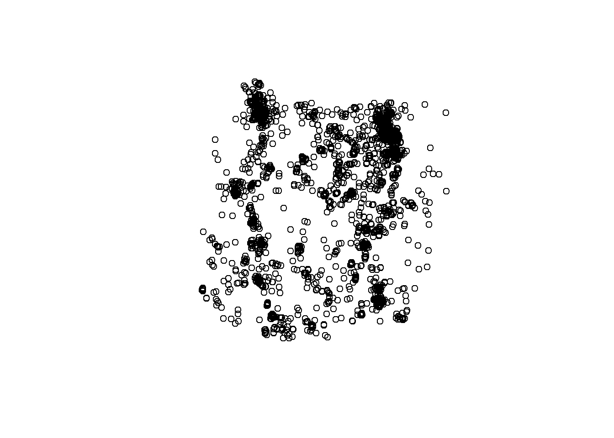
It’s looking good, but it’s in the wrong coordinate system. Let’s convert the CRS to 5070 to match the other data layers, then let’s plot them all together.
# Transform
deer_4 <- st_transform(deer, 5070)
# plot
par(mfrow=c(1,1))
plot(states_4$geometry, main = "Deer, Roads, Counties, and the 4 Corner States")
plot(counties_4$geometry, col = "Tan", add = T)
plot(roads_4$geometry, col = "Red", add = T)
plot(deer_4$geometry, col = "Blue", add = T)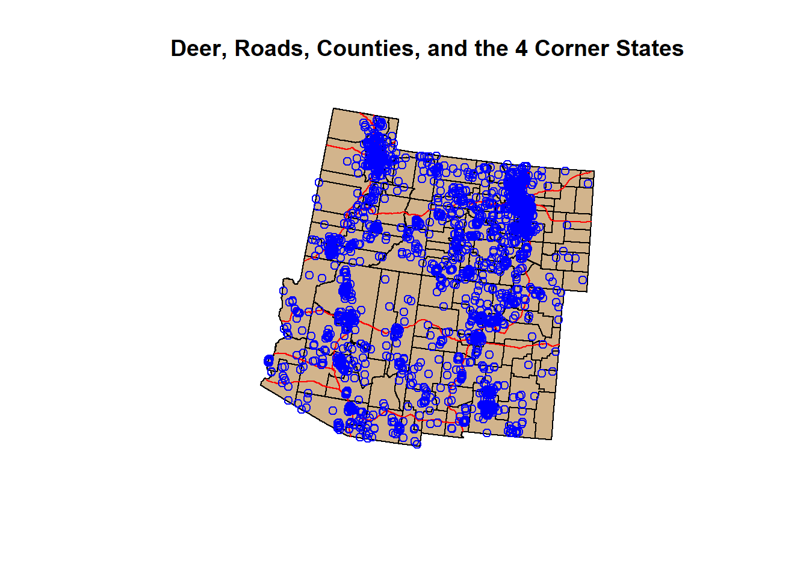
A little busy looking, but we did it. We have brought in our shapefiles and occurrence data, manipulated it, and visualized it. It took about 5-6 functions to do so… But there are still so many more sf functions that are worth learning.
Now we wont cover all of them here, but below are several that are worth visiting.
st_buffer()
A buffer is exactly what it sounds like. st_buffer() creates a buffer around a point, line, or polygon at a designated distance. The syntax for st_buffer() is as follows:
buffer <- st_buffer(data, dist = x)
*Dist = x; the unit of distance is directly related to the CRS unit of measurement (degrees, meters, etc.). CRS 5070 is in meters.
Let’s do some examples and make 100,000 meter buffers around our points, lines, and polygons.
Check out the code:
pts <- st_buffer(deer_4, 100000)
lines <- st_buffer(roads_4, 100000)
polygonz <- st_buffer(states_4, 100000)
par(mfrow=c(1,3))
plot(pts$geometry, col = "Blue")
plot(deer_4$geometry, add = T, col = "red")
plot(lines$geometry, col = "Blue", main = "Buffers in Blue | Data in Red")
plot(roads_4$geometry, add = T, col = "red")
plot(polygonz$geometry, col = "Blue")
plot(states_4$geometry, add = T, col = "red")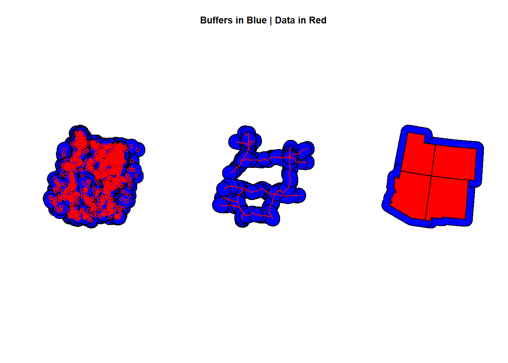
st_union()
st_union() merges all overlapping points, lines, or polygons from a dataset. For example, let’s look at our buffered points data from the previous function.
pts <- st_buffer(deer_4, 100000)
plot(pts$geometry, main = "Buffered Deer Occurrence Points: 100,000 Meters")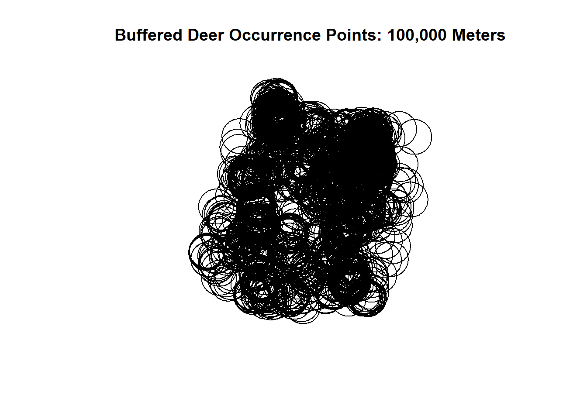
That’s a lot of buffered points and looks like a scene from the Ring. It’s pretty messy and not very useful at the moment. Let’s say we want the general outlining shape of the buffered points, but we want it as 1 polygon.
That is where st_union() comes in. Let’s run st_union() on our buffered points and plot the occurrences inside the unionized buffers:
buffered_union <- st_union(pts$geometry)
plot(buffered_union)
plot(deer_4$geometry, add = T)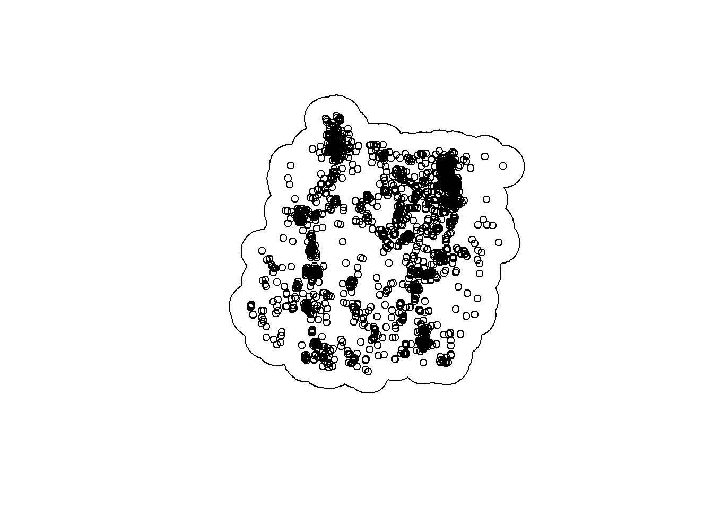
st_convex_hull()
Simply put, a convex hull polygon is a polygon that encapsulates points into a polygon by defining the polygon edges from the outer most points. It’s like the unionized buffer above, without the distance from the points created by the buffer.
Convex hull polygons are popular in wildlife studies using occurrence data to create an polygon of the area of points.
Lets run through an example:
CHP <- st_convex_hull(st_union(deer_4)) # requires the use of st_union() on occurrences
par(mfrow=c(1,2))
plot(CHP, main = "Convex Hull Polygon")
plot(CHP, main = "With Deer Occurrences")
plot(deer_4$geometry, add = T)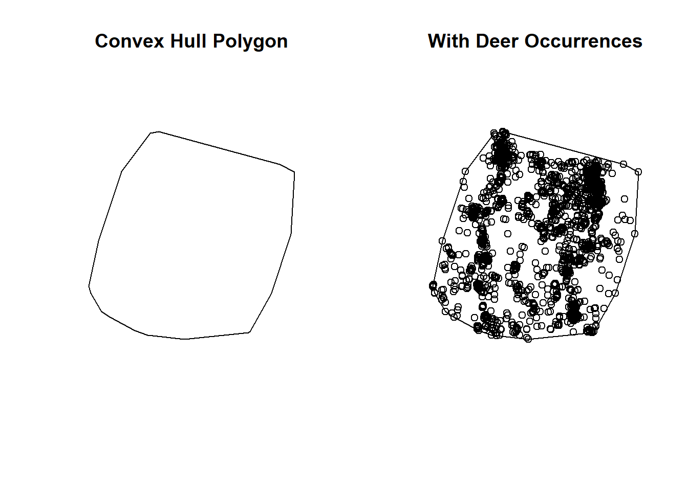
So how do st_union() and st_convex_hull() differ? These plots below explain it all:
par(mfrow=c(1,2))
plot(buffered_union, main = "Buffered Union")
plot(deer_4$geometry, add = T)
plot(CHP, main = "Convex Hull Polygon")
plot(deer_4$geometry, add = T)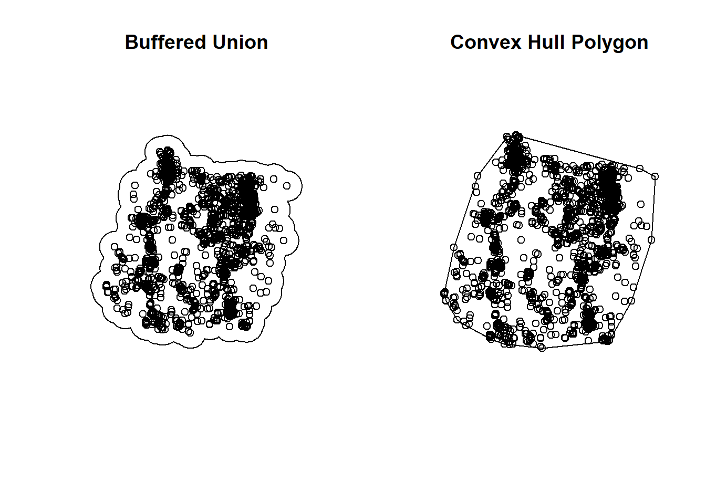
st_bbox() and st_as_sfc()
There is another option if you would like to create a bounding box around your data. Simply run the function st_bbox() for a perfect rectangle or square bounding box around your points, lines, or polygons.
Check it out:
# Bounding box to polygon
bbox <- st_bbox(deer_4)
bbox # Coordinates of spatial extent of deer points## xmin ymin xmax ymax
## -1718842.7 999269.7 -526158.9 2205393.8class(bbox)## [1] "bbox"bbox <- st_as_sfc(bbox) # make a spatial polygon
plot(bbox) # plot it
plot(deer_4$geometry, add = T)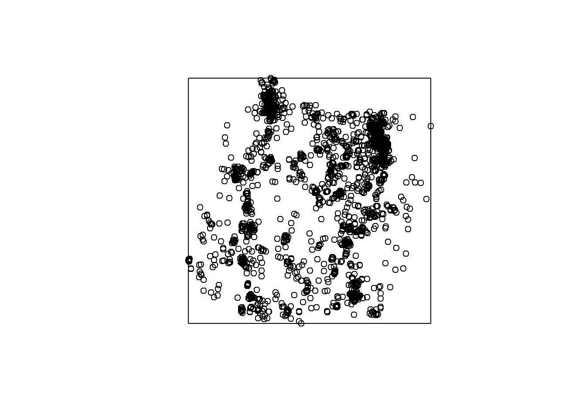
st_area()
st_area() only works on vector data that has an area, so only polygons. However, when you run st_area() it will compute the area for each polygon in the order of the dataframe. Basically, the values come out a little messy looking. Let’s run it on our 4 corners states.
areaa <- st_area(states_4); head(states_4$STATE) # see order of names## [1] "New Mexico" "Utah" "Colorado" "Arizona"areaa # area## Units: [m^2]
## [1] 314917859635 219884501401 269602189121 295233523706Let’s make that area output useful and put it into a new column on our states polygon:
states_4$area <- st_area(states_4)
head(states_4, 5)## Simple feature collection with 4 features and 5 fields
## Geometry type: MULTIPOLYGON
## Dimension: XY
## Bounding box: xmin: -1746916 ymin: 991813.4 xmax: -504621.5 ymax: 2250688
## Projected CRS: NAD83 / Conus Albers
## STFIPS STATE STPOSTAL DotRegion geometry
## 13 35 New Mexico NM 6 MULTIPOLYGON (((-616759.3 1...
## 24 49 Utah UT 8 MULTIPOLYGON (((-1232642 22...
## 27 08 Colorado CO 8 MULTIPOLYGON (((-671178.4 2...
## 56 04 Arizona AZ 9 MULTIPOLYGON (((-1146481 16...
## area
## 13 314917859635 [m^2]
## 24 219884501401 [m^2]
## 27 269602189121 [m^2]
## 56 295233523706 [m^2]st_make_grid()
Grids are useful for a number of analyses in spatial analysis (Zonal statistics, fishnet grids of probability modeling, etc.). st_make_grid() isn’t exactly the most clever name out there but there’s no second guessing what the function does. It makes grids (pretty much a raster dataset).
Lets make a grid over our states polygon with cells that are 1000 square km. The cellsize will be created with the same units from the data CRS (using 5070, that’s meters).
gridz <- st_make_grid(states_4, cellsize = 100000)
plot(states_4$geometry, col = "Blue", main = "Grid")
plot(gridz, add = T)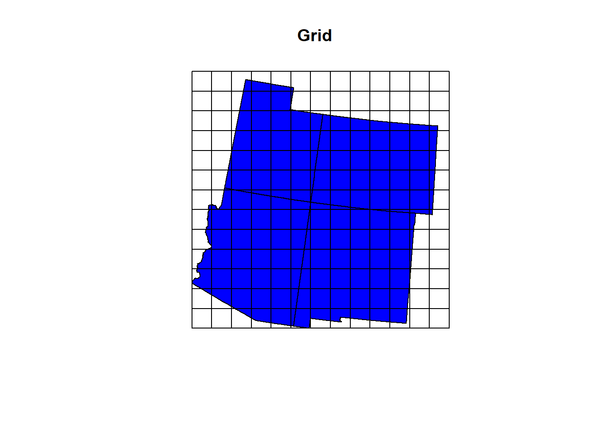
st_coordinates()
Sometimes when working with a shapefile, we only need the coordinates of that shapefile. For example, lets say we do not need the geometry column on our deer occurrences anymore, we just need the columns. We could subset the columns (an easy way), or we can run st_coordinates() (another easy way ).
Let’s run it on our deer occurrences:
deer_coords <- st_coordinates(deer_4) %>% as.data.frame() # otherwise it is a matrix array
head(deer_coords)## X Y
## 1 -1324299 2083183
## 2 -1482557 1710512
## 3 -1292908 1696216
## 4 -1167210 1825797
## 5 -1142969 1672678
## 6 -1357306 2187688st_drop_geometry()
A similar idea as the function above, st_drop_geometry() allows you to drop the geometry column from any spatial dataset. Lets see what the roads data looks like before and after dropping geometry:
head(roads_4, 5) # Before## Simple feature collection with 5 features and 8 fields
## Geometry type: LINESTRING
## Dimension: XY
## Bounding box: xmin: -1001120 ymin: 1384435 xmax: -742620.6 ymax: 1583408
## Projected CRS: NAD83 / Conus Albers
## LINEARID FULLNAME RTTYP MTFCC STFIPS STATE STPOSTAL DotRegion
## 217 1106039038224 US Hwy 85 U S1100 35 New Mexico NM 6
## 219 1106039347635 US Hwy 85 U S1100 35 New Mexico NM 6
## 251 1106039037327 US Hwy 85 U S1100 35 New Mexico NM 6
## 337 1104492838446 I- 40 I S1100 35 New Mexico NM 6
## 431 1104257616668 I- 25 I S1100 35 New Mexico NM 6
## geometry
## 217 LINESTRING (-770301 1498303...
## 219 LINESTRING (-805218.9 14513...
## 251 LINESTRING (-770258.4 14982...
## 337 LINESTRING (-1001120 138443...
## 431 LINESTRING (-919830.2 14326...head(st_drop_geometry(roads_4), 5) # After## LINEARID FULLNAME RTTYP MTFCC STFIPS STATE STPOSTAL DotRegion
## 217 1106039038224 US Hwy 85 U S1100 35 New Mexico NM 6
## 219 1106039347635 US Hwy 85 U S1100 35 New Mexico NM 6
## 251 1106039037327 US Hwy 85 U S1100 35 New Mexico NM 6
## 337 1104492838446 I- 40 I S1100 35 New Mexico NM 6
## 431 1104257616668 I- 25 I S1100 35 New Mexico NM 6st_intersects()
st_intersects() is a method for returning the count of spatial data within the area of another. A good example here would be, “How many points are there in each polygon?”.
Let’s write the code for counting the number of each deer occurrence in each county. Then let’s add it to our counties dataset as a new column.
Check out the code:
# Points in Polygons with st_intersection
count_data <- counties_4 %>% # Variable count_data subsetting from counties
mutate(counts = lengths(st_intersects(., deer_4))) # create new column names "counts". Lengths (the amount)
names(count_data) # intersected (within the polygon) from the deer dataset## [1] "STATEFP" "COUNTYFP" "COUNTYNS" "GEOID" "NAME" "NAMELSAD"
## [7] "LSAD" "CLASSFP" "MTFCC" "CSAFP" "CBSAFP" "METDIVFP"
## [13] "FUNCSTAT" "ALAND" "AWATER" "INTPTLAT" "INTPTLON" "STFIPS"
## [19] "STATE" "STPOSTAL" "DotRegion" "geometry" "counts"# What does it look like
head(count_data); names(count_data)## Simple feature collection with 6 features and 22 fields
## Geometry type: GEOMETRY
## Dimension: XY
## Bounding box: xmin: -1204691 ymin: 1030545 xmax: -616769.9 ymax: 1618185
## Projected CRS: NAD83 / Conus Albers
## STATEFP COUNTYFP COUNTYNS GEOID NAME NAMELSAD LSAD CLASSFP
## 3 35 011 00933054 35011 De Baca De Baca County 06 H1
## 31 35 035 00929104 35035 Otero Otero County 06 H1
## 32 35 003 00929108 35003 Catron Catron County 06 H1
## 200 08 067 00198148 08067 La Plata La Plata County 06 H1
## 210 35 059 00929115 35059 Union Union County 06 H1
## 449 35 047 00929114 35047 San Miguel San Miguel County 06 H1
## MTFCC CSAFP CBSAFP METDIVFP FUNCSTAT ALAND AWATER INTPTLAT
## 3 G4020 <NA> <NA> <NA> A 6016818946 29090018 +34.3592729
## 31 G4020 <NA> 10460 <NA> A 17126455954 36944199 +32.6155988
## 32 G4020 <NA> <NA> <NA> A 17933561654 14193499 +33.9016208
## 200 G4020 <NA> 20420 <NA> A 4376255277 25642579 +37.2873673
## 210 G4020 <NA> <NA> <NA> A 9906834380 15498790 +36.4880853
## 449 G4020 106 29780 <NA> A 12228666259 51380263 +35.4768585
## INTPTLON STFIPS STATE STPOSTAL DotRegion
## 3 -104.3686961 35 New Mexico NM 6
## 31 -105.7513079 35 New Mexico NM 6
## 32 -108.3919284 35 New Mexico NM 6
## 200 -107.8397178 35 New Mexico NM 6
## 210 -103.4757229 35 New Mexico NM 6
## 449 -104.8035189 35 New Mexico NM 6
## geometry counts
## 3 POLYGON ((-760274.6 1325888... 1
## 31 POLYGON ((-916054.9 1194727... 602
## 32 POLYGON ((-1128293 1198329,... 18
## 200 MULTIPOLYGON (((-1029975 16... 0
## 210 POLYGON ((-624558.6 1515470... 20
## 449 POLYGON ((-753725.7 1384155... 23## [1] "STATEFP" "COUNTYFP" "COUNTYNS" "GEOID" "NAME" "NAMELSAD"
## [7] "LSAD" "CLASSFP" "MTFCC" "CSAFP" "CBSAFP" "METDIVFP"
## [13] "FUNCSTAT" "ALAND" "AWATER" "INTPTLAT" "INTPTLON" "STFIPS"
## [19] "STATE" "STPOSTAL" "DotRegion" "geometry" "counts"geom_sf()
geom_sf() is a function that is tied to the ggplot2 package, not sf. Until this point, we have been using the plot() function. While useful, it doesn’t have the capabilities that ggplot2 does.
This is just a sneak peak. We will cover cartography and spatial data visualization in week 7.
Lets make a map of the counties polygons but have the colors correlate with the counts of deer occurrence per county:
ggplot() +
geom_sf(data = count_data, aes(fill = counts)) +
labs(title = "ggplot2 can work with spatial data!")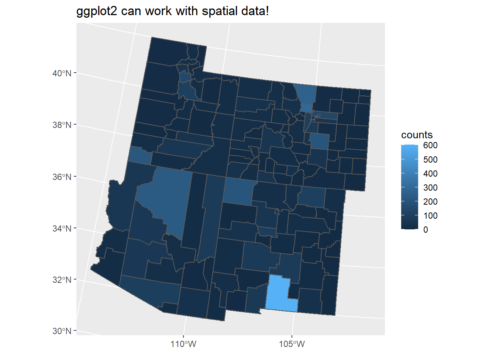
Bonus: par(mfrow=c(,))
If you do not know of this code yet, here is an option to have several graphs in one single plot.
par(mfrow=c(x,y))
x refers to how many rows.
y refers to how many columns.
Let’s say I want to have a single plot with 3 rows of graphs. In each row, I want 2 graphs. I would set up my code as such:
par(mfrow=c(3,2))
Then, after running that code, you would code your graphs. The graphs would occupy the plot from top 2 bottom, left 2 right.
Here is an example:
par(mfrow=c(3,2))
plot(states_4$geometry, col = "red", main = "Plot 1")
plot(states_4$geometry, col = "Blue", main = "Plot 2")
plot(states_4$geometry, col = "Green", main = "Plot 3")
plot(states_4$geometry, col = "Yellow", main = "Plot 4")
plot(states_4$geometry, col = "Purple", main = "Plot 5")
plot(states_4$geometry, col = "Tan", main = "Plot 6")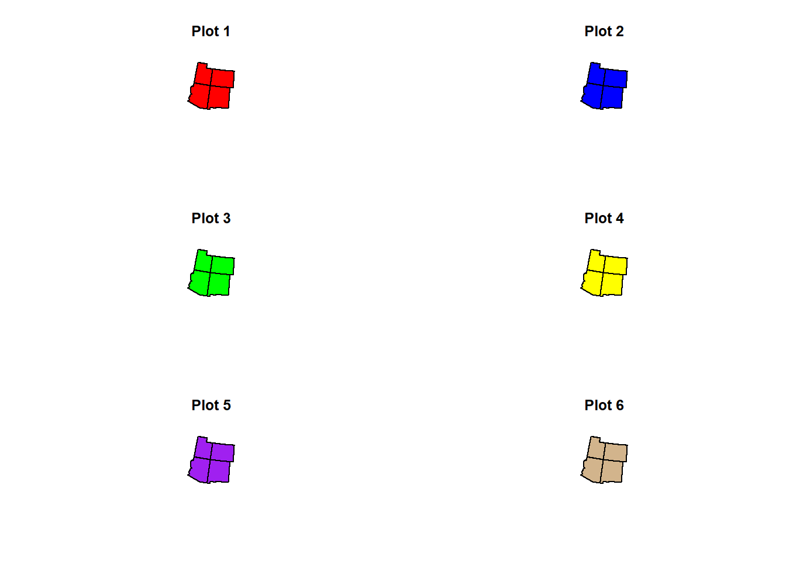